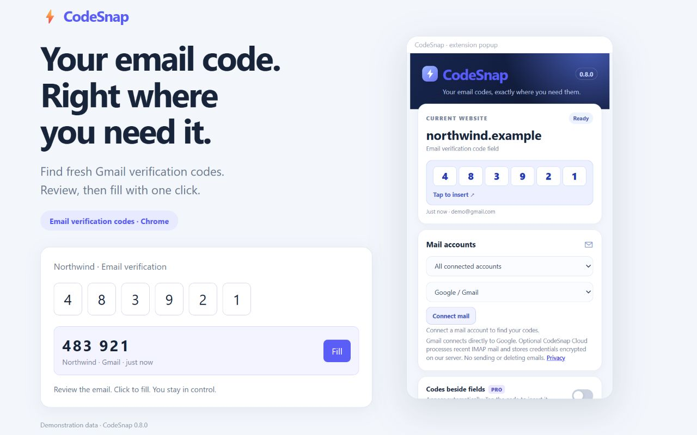

EMAIL VERIFICATION, WITH FEWER TABS
Your email code.
Right beside the field.
Find email verification codes from Gmail and fill OTP fields with one click. Yandex OAuth and optional Cloud IMAP, without local software.
Download CodeSnapChrome Web Store listing is being prepared. Downloads here are unpacked builds, not a store installation.

Find. Review. Fill.
Connect Gmail, request a fresh email code, then review and fill it with one click. CodeSnap never submits a website form.
Multiple accounts. Clear suggestions.
Choose a mailbox per website. Enable the detailed popup for the sender, account, code age and recent matching messages.
Mail through CodeSnap Cloud
Yandex uses official OAuth. Yahoo, Mail.ru and manual IMAP use app passwords through CodeSnap Cloud. Enable Cloud in Settings and confirm server processing. No local software required. Outlook remains unavailable.
Privacy built into the workflow
Gmail connects directly to Google. Optional IMAP processing runs on our CodeSnap Cloud server with encrypted credentials. No ads or analytics. Read the permission and data details in our privacy policy.
Connection availability
Google OAuth verification is separate from Chrome Web Store review. Gmail may remain limited to approved test accounts while Google authorization is in testing.